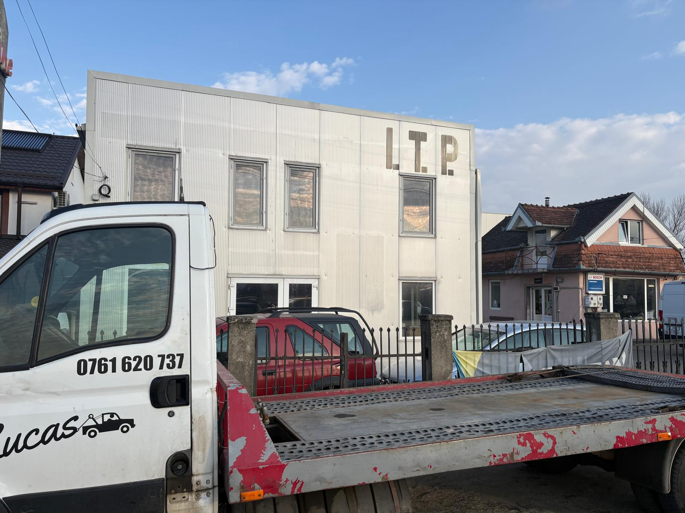
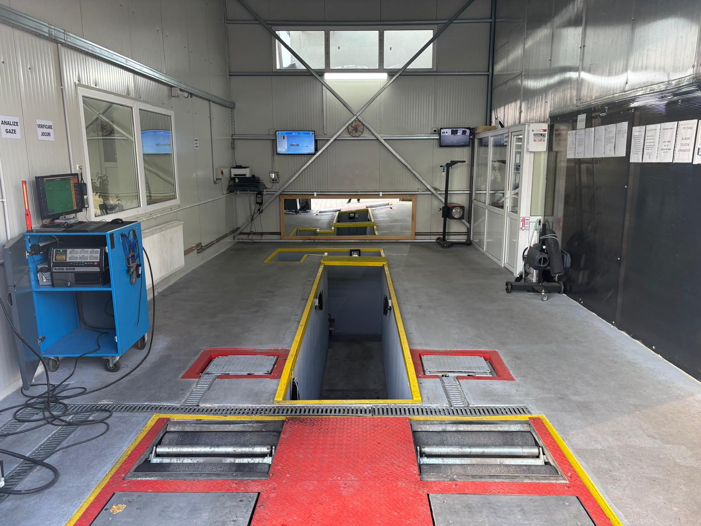
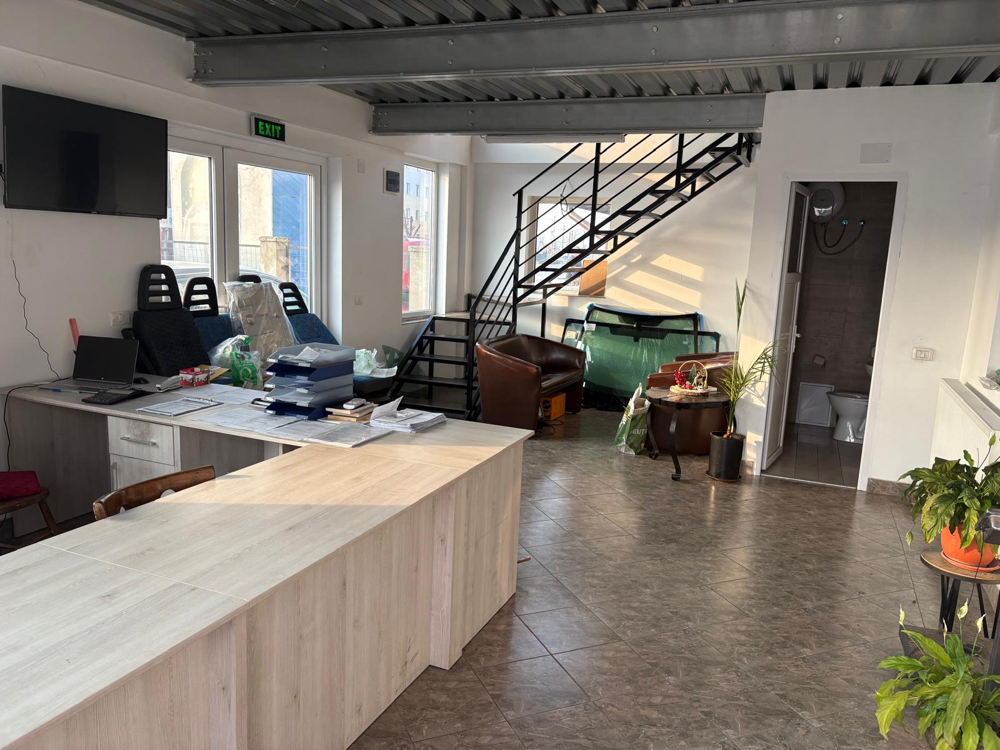
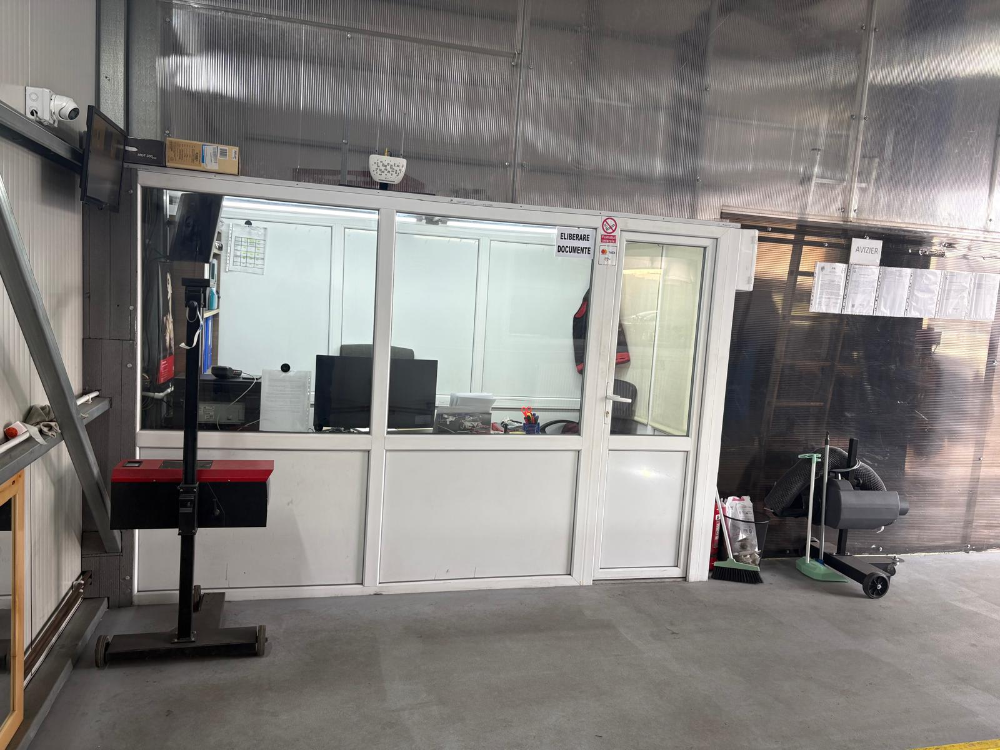
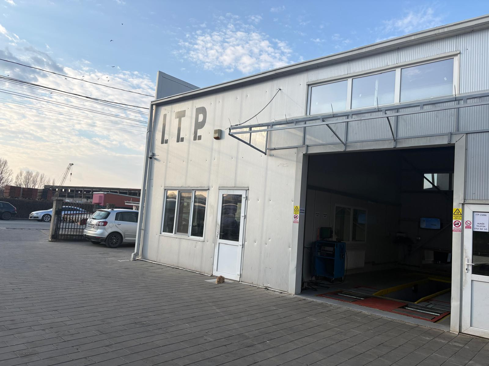

Despre noi
Lucas Gal ITP S.R.L. vă oferă servicii profesionale de Inspecție Tehnică Periodică (ITP) în Caransebeș, într-un mediu modern și bine echipat. Punem accent pe seriozitate, promptitudine și calitatea serviciilor, astfel încât fiecare client să beneficieze de o verificare corectă și sigură a vehiculului.
Stația este autorizată pentru vehicule rutiere de clasa a II-a cu MTMA de până la 3500 kg inclusiv, având înălțime maximă de 3,05 m, lungime maximă de 6,9 m și distanță minimă între fețele interioare ale anvelopelor de 1 m.
La Lucas Gal SRL, ne dorim ca fiecare client să plece mulțumit, având certitudinea că autovehiculul său a fost verificat cu atenție și profesionalism.





- Certificatul de înmatriculare al autovehiculului (talonul) – pentru a confirma că vehiculul este înmatriculat și poate circula legal.
- Cartea de identitate a vehiculului (CIV) – document care conține datele tehnice și caracteristicile autovehiculului.
- Polița de asigurare RCA valabilă – pentru a demonstra existența unei asigurări de răspundere civilă auto.
- Actul de identitate al persoanei care prezintă vehiculul la ITP – deoarece mașina poate fi adusă la inspecție de orice persoană, nu neapărat de proprietar.
- Licența de transport (pentru autovehicule comerciale) – necesară doar în cazul vehiculelor utilizate pentru activități comerciale.
- Mașini noi (sub 3 ani vechime): prima inspecție se face la 3 ani de la data primei înmatriculări.
- Mașini cu vechime între 3 și 12 ani: ITP-ul se efectuează la fiecare 2 ani.
- Mașini cu vechime peste 12 ani: ITP-ul se efectuează anual.
- Excepție fac vehiculele folosite în regim de transport persoane, așa cum este exemplul taximetrelor, care sunt obligate să efectueze ITP-ul la fiecare 6 luni.
- Luminile și semnalele – verifică dacă farurile, stopurile, semnalizatoarele și luminile de poziție funcționează corespunzător și sunt vizibile.
- Sistemul de frânare – controlează starea plăcuțelor și a discurilor de frână pentru a te asigura că sistemul de frânare funcționează corect și eficient.
- Emisiile poluante – inspectează sistemul de evacuare pentru a vedea dacă există crăpături, scurgeri sau alte defecțiuni care ar putea duce la creșterea nivelului de emisii.
- Suspensia și direcția – fii atent la eventuale zgomote neobișnuite, vibrații sau probleme la manevrarea volanului, deoarece acestea pot indica defecțiuni ale suspensiei sau direcției.
- Anvelopele – verifică dacă anvelopele sunt în stare bună, cu uzură uniformă și cu o adâncime suficientă a benzii de rulare.
- Nivelul lichidelor – asigură-te că lichidul de răcire, uleiul de motor și lichidul de frână se află la nivelurile recomandate.